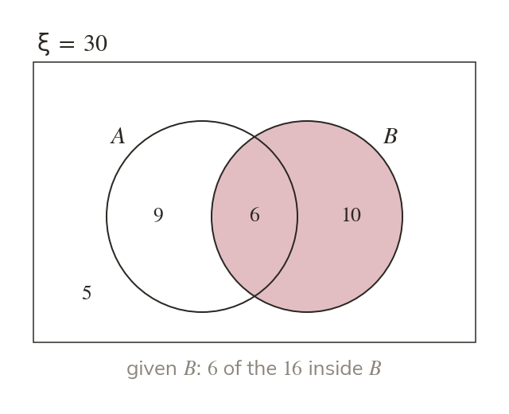

Only the given circle counts
Given B, only circle B is possible. P (A | B) is the overlap over the whole of B.
Given B, only the elements inside circle B are possible, both the B only region and the overlap. So P (A | B) is the overlap divided by the whole of B.